Filtra per:
Regioni
Categorie
| 1 |
 |
Stati Uniti |
1,15 mila mld |
|
| 2 |
 |
Regno Unito |
649 mld |
|
| 3 |
 |
Irlanda |
520 mld |
|
| 4 |
 |
Germania |
472 mld |
|
| 5 |
 |
Cina continentale |
446 mld |
|
| 6 |
 |
Francia |
400 mld |
|
| 7 |
 |
Singapore |
396 mld |
|
| 8 |
 |
India |
375 mld |
|
| 9 |
 |
Paesi Bassi |
336 mld |
|
| 10 |
 |
Giappone |
229 mld |
|
| 11 |
 |
Spagna |
220 mld |
|
| 12 |
 |
Svizzera |
180 mld |
|
| 13 |
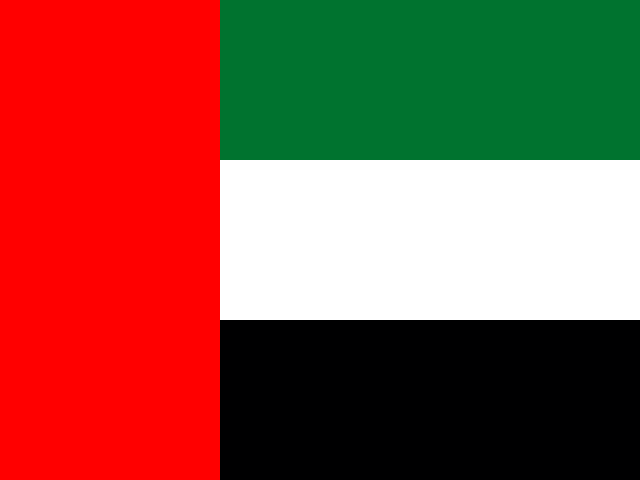 |
Emirati Arabi Uniti |
177 mld |
|
| 14 |
 |
Lussemburgo |
171 mld |
|
| 15 |
 |
Canada |
159 mld |
|
| 16 |
 |
Italia |
155 mld |
|
| 17 |
 |
Belgio |
148 mld |
|
| 18 |
 |
Corea del Sud |
139 mld |
|
| 19 |
 |
Danimarca |
127 mld |
|
| 20 |
 |
Polonia |
119 mld |
|
| 21 |
 |
Svezia |
117 mld |
|
| 22 |
 |
Turchia |
115 mld |
|
| 23 |
 |
Hong Kong |
109 mld |
|
| 24 |
 |
Austria |
94,3 mld |
|
| 25 |
 |
Israele |
84,4 mld |
|
| 26 |
 |
Australia |
83,4 mld |
|
| 27 |
 |
Thailandia |
72,1 mld |
|
| 28 |
 |
Portogallo |
62,2 mld |
|
| 29 |
 |
Taiwan |
58,8 mld |
|
| 30 |
 |
Messico |
57,2 mld |
|
| 31 |
 |
Norvegia |
56,9 mld |
|
| 32 |
 |
Grecia |
55,7 mld |
|
| 33 |
 |
Arabia Saudita |
55,3 mld |
|
| 34 |
 |
Malaysia |
53,4 mld |
|
| 35 |
 |
Filippine |
52 mld |
|
| 36 |
 |
Brasile |
48,5 mld |
|
| 37 |
 |
Romania |
42,9 mld |
|
| 38 |
 |
Cechia |
42,6 mld |
|
| 39 |
 |
Russia |
42,2 mld |
|
| 40 |
 |
Finlandia |
41,2 mld |
|
| 41 |
 |
Macao |
40,1 mld |
|
| 42 |
 |
Indonesia |
39 mld |
|
| 43 |
 |
Ungheria |
38,3 mld |
|
| 44 |
 |
Cipro |
31,1 mld |
|
| 45 |
 |
Qatar |
30,2 mld |
|
| 46 |
 |
Egitto |
29,6 mld |
|
| 47 |
 |
Marocco |
27,7 mld |
|
| 48 |
 |
Malta |
24,7 mld |
|
| 49 |
 |
Croazia |
24,6 mld |
|
| 50 |
 |
Lituania |
24,2 mld |
|
| 51 |
 |
Vietnam |
23,9 mld |
|
| 52 |
 |
Nuova Zelanda |
18,5 mld |
|
| 53 |
 |
Panama |
18,3 mld |
|
| 54 |
 |
Colombia |
17,8 mld |
|
| 55 |
 |
Ucraina |
17,2 mld |
|
| 56 |
 |
Argentina |
17,1 mld |
|
| 57 |
 |
Bahrein |
17 mld |
|
| 58 |
 |
Bulgaria |
16,6 mld |
|
| 59 |
 |
Costa Rica |
16,1 mld |
|
| 60 |
 |
Sudafrica |
15,9 mld |
|
| 61 |
 |
Serbia |
15,6 mld |
|
| 62 |
 |
Repubblica Dominicana |
14,7 mld |
|
| 63 |
 |
Slovacchia |
13,6 mld |
|
| 64 |
 |
Slovenia |
13,5 mld |
|
| 65 |
 |
Estonia |
13,5 mld |
|
| 66 |
 |
Iran |
13 mld |
|
| 67 |
 |
Kuwait |
12,2 mld |
|
| 68 |
 |
Kazakistan |
11,8 mld |
|
| 69 |
 |
Cile |
11,7 mld |
|
| 70 |
 |
Tunisia |
11,1 mld |
|
| 71 |
 |
Bielorussia |
9,89 mld |
|
| 72 |
 |
Giordania |
9,4 mld |
|
| 73 |
 |
Ghana |
9,27 mld |
|
| 74 |
 |
Iraq |
8,52 mld |
|
| 75 |
 |
Lettonia |
8,36 mld |
|
| 76 |
 |
Azerbaigian |
8,12 mld |
|
| 77 |
 |
Pakistan |
8,1 mld |
|
| 78 |
 |
Albania |
8,01 mld |
|
| 79 |
 |
Georgia |
7,7 mld |
|
| 80 |
 |
Perù |
7,15 mld |
|
| 81 |
 |
Uruguay |
6,95 mld |
|
| 82 |
 |
Tanzania |
6,94 mld |
|
| 83 |
|
Sri Lanka |
6,91 mld |
|
| 84 |
 |
Islanda |
6,89 mld |
|
| 85 |
 |
Libano |
6,81 mld |
|
| 86 |
 |
Bangladesh |
6,65 mld |
|
| 87 |
 |
Uzbekistan |
6,55 mld |
|
| 88 |
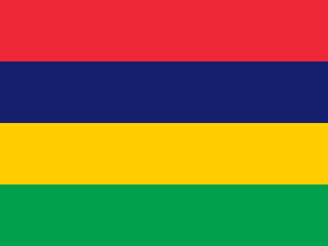 |
Mauritius |
6,15 mld |
|
| 89 |
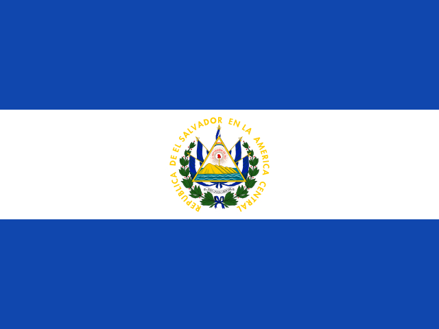 |
El Salvador |
6 mld |
|
| 90 |
 |
Oman |
5,97 mld |
|
| 91 |
 |
Bahamas |
5,9 mld |
|
| 92 |
 |
Armenia |
5,68 mld |
|
| 93 |
 |
Kenya |
5,53 mld |
|
| 94 |
 |
Giamaica |
5,26 mld |
|
| 95 |
 |
Maldive |
5,03 mld |
|
| 96 |
 |
Cambogia |
4,96 mld |
|
| 97 |
 |
Algeria |
4,81 mld |
|
| 98 |
 |
Guatemala |
4,67 mld |
|
| 99 |
 |
Nigeria |
4,57 mld |
|
| 100 |
 |
Ecuador |
3,77 mld |
|
| 101 |
 |
Bosnia ed Erzegovina |
3,74 mld |
|
| 102 |
 |
Honduras |
3,68 mld |
|
| 103 |
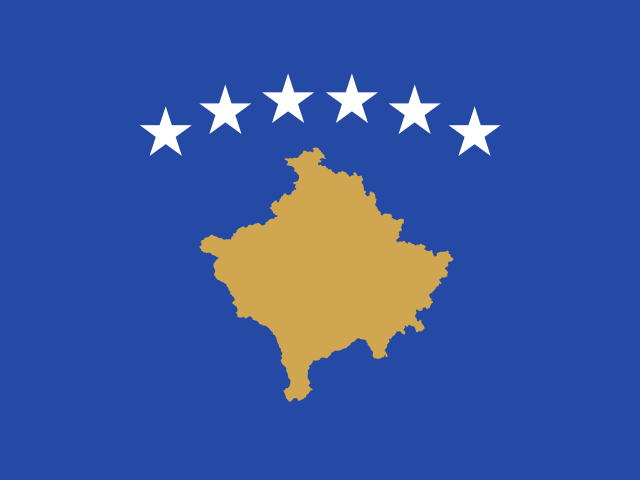 |
Kosovo |
3,64 mld |
|
| 104 |
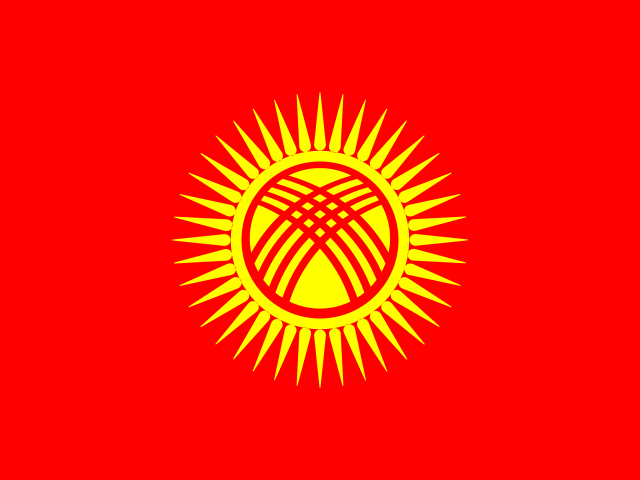 |
Kirghizistan |
3,44 mld |
|
| 105 |
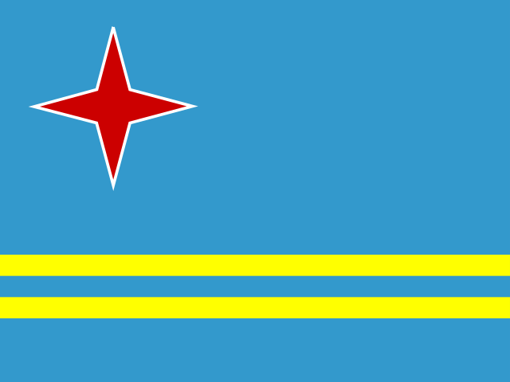 |
Aruba |
3,33 mld |
|
| 106 |
 |
Macedonia del Nord |
3,16 mld |
|
| 107 |
 |
Montenegro |
2,9 mld |
|
| 108 |
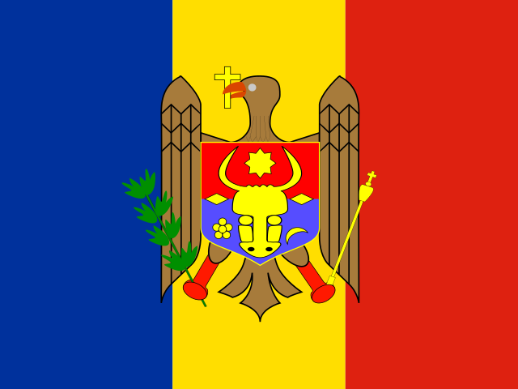 |
Moldavia |
2,7 mld |
|
| 109 |
 |
Paraguay |
2,65 mld |
|
| 110 |
 |
Uganda |
2,39 mld |
|
| 111 |
 |
Camerun |
2,12 mld |
|
| 112 |
 |
Figi |
1,98 mld |
|
| 113 |
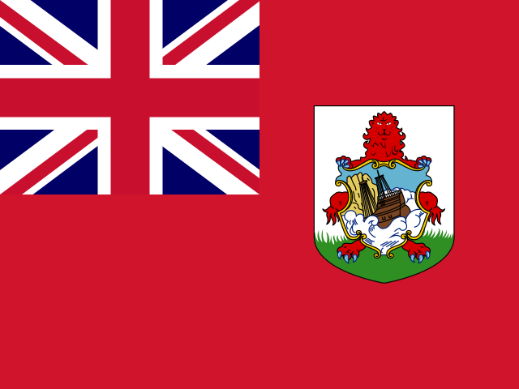 |
Bermuda |
1,89 mld |
|
| 114 |
 |
Curaçao |
1,88 mld |
|
| 115 |
 |
Nepal |
1,84 mld |
|
| 116 |
 |
Seychelles |
1,8 mld |
|
| 117 |
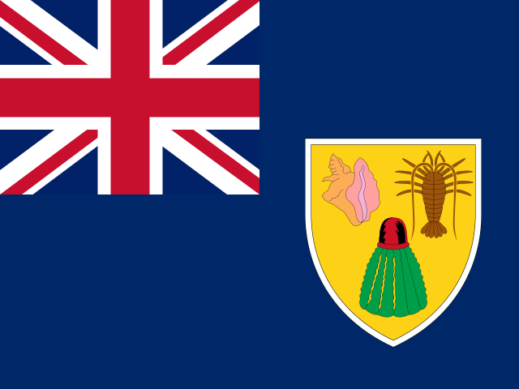 |
Isole Turks e Caicos |
1,78 mld |
|
| 118 |
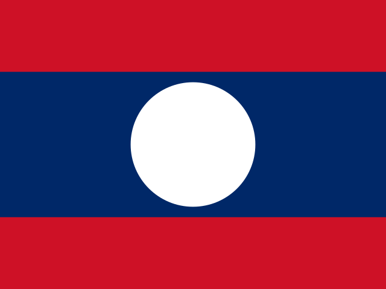 |
Laos |
1,73 mld |
|
| 119 |
 |
Barbados |
1,66 mld |
|
| 120 |
 |
Somalia |
1,6 mld |
|
| 121 |
 |
Senegal |
1,59 mld |
|
| 122 |
|
Mongolia |
1,57 mld |
|
| 123 |
 |
Saint Lucia |
1,46 mld |
|
| 124 |
 |
Madagascar |
1,4 mld |
|
| 125 |
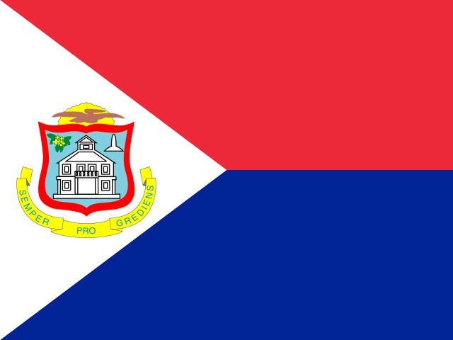 |
Sint Maarten |
1,34 mld |
|
| 126 |
 |
Nicaragua |
1,3 mld |
|
| 127 |
 |
Namibia |
1,29 mld |
|
| 128 |
 |
Costa d’Avorio |
1,27 mld |
|
| 129 |
 |
Trinidad e Tobago |
1,26 mld |
|
| 130 |
 |
Antigua e Barbuda |
1,24 mld |
|
| 131 |
 |
Zambia |
1,21 mld |
|
| 132 |
 |
Gibuti |
1,17 mld |
|
| 133 |
 |
Belize |
1,16 mld |
|
| 134 |
 |
Mozambico |
1,15 mld |
|
| 135 |
 |
Bolivia |
1,12 mld |
|
| 136 |
 |
Togo |
851 mln |
|
| 137 |
 |
Botswana |
845 mln |
|
| 138 |
 |
Capo Verde |
830 mln |
|
| 139 |
 |
Grenada |
789 mln |
|
| 140 |
 |
Burkina Faso |
658 mln |
|
| 141 |
|
Sudan |
571 mln |
|
| 142 |
|
Ciad |
542 mln |
|
| 143 |
 |
Palestina |
514 mln |
|
| 144 |
 |
Mali |
501 mln |
|
| 145 |
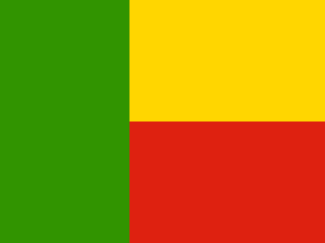 |
Benin |
495 mln |
|
| 146 |
 |
Sud Sudan |
484 mln |
|
| 147 |
|
Malawi |
483 mln |
|
| 148 |
 |
Gambia |
475 mln |
|
| 149 |
 |
Saint Kitts e Nevis |
471 mln |
|
| 150 |
|
Zimbabwe |
469 mln |
|
| 151 |
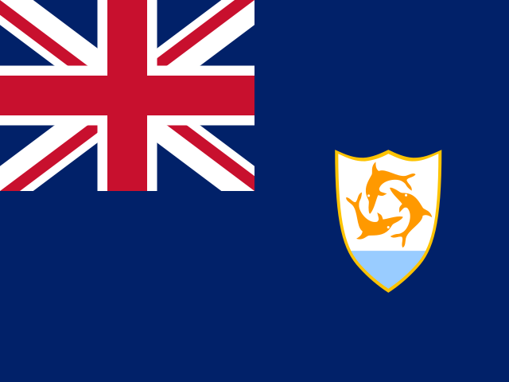 |
Anguilla |
421 mln |
|
| 152 |
 |
Brunei |
410 mln |
|
| 153 |
 |
Saint Vincent e Grenadine |
366 mln |
|
| 154 |
 |
Samoa |
327 mln |
|
| 155 |
 |
Liberia |
303 mln |
|
| 156 |
 |
Bhutan |
288 mln |
|
| 157 |
 |
Niger |
259 mln |
|
| 158 |
 |
Mauritania |
251 mln |
|
| 159 |
 |
Eswatini |
221 mln |
|
| 160 |
 |
Suriname |
211 mln |
|
| 161 |
 |
Tagikistan |
195 mln |
|
| 162 |
 |
Dominica |
191 mln |
|
| 163 |
 |
Vanuatu |
157 mln |
|
| 164 |
 |
Isole Salomone |
133 mln |
|
| 165 |
 |
Comore |
129 mln |
|
| 166 |
 |
Angola |
129 mln |
|
| 167 |
 |
Burundi |
126 mln |
|
| 168 |
 |
São Tomé e Príncipe |
109 mln |
|
| 169 |
|
Tonga |
109 mln |
|
| 170 |
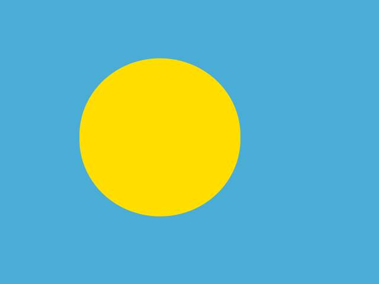 |
Palau |
92,4 mln |
|
| 171 |
 |
Timor Est |
82,1 mln |
|
| 172 |
 |
Papua Nuova Guinea |
54,8 mln |
|
| 173 |
 |
Sierra Leone |
50,9 mln |
|
| 174 |
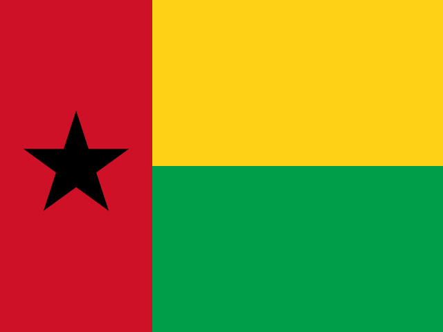 |
Guinea-Bissau |
49,2 mln |
|
| 175 |
 |
Gabon |
38 mln |
|
| 176 |
 |
Nauru |
34,6 mln |
|
| 177 |
 |
Montserrat |
22,3 mln |
|
| 178 |
 |
Lesotho |
15,4 mln |
|
| 179 |
 |
Kiribati |
11,7 mln |
|
| 180 |
 |
Tuvalu |
10,7 mln |
|